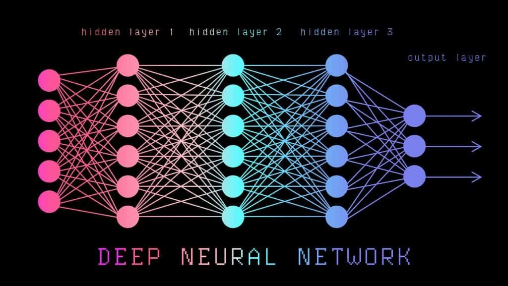
Etapa 1: Revisão da aula passada
A regressão logística
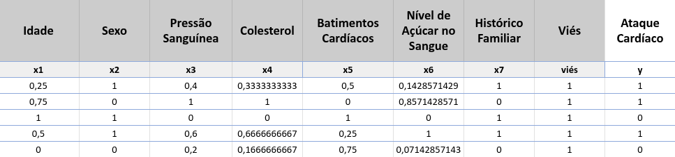
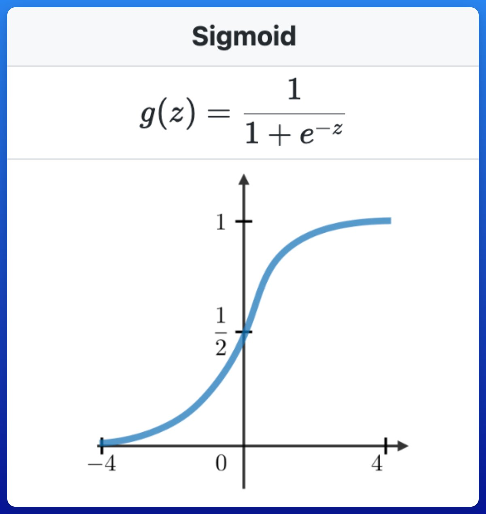
A saída passa por uma sigmoide, gerando uma probabilidade entre 0 e 1:
\( g(z) = \dfrac{1}{1 + e^{-z}} \)
Gradiente descendente: ajustando os pesos
- A função de perda (Loss) mede o quão ruim está o modelo
- A derivada (gradiente) indica a tendência de melhora ou piora
- Damos passos na direção que reduz a perda até o mínimo
\( \text{Loss} = -\sum_{i=1}^{n}\big(y_i\log(\hat{y_i}) + (1-y_i)\log(1-\hat{y_i})\big) \)

Gradiente na regressão logística
\( w_j = w_{j_{\text{velho}}} - \alpha \; \dfrac{\sum_i x_i(\hat{y_i} - y_i)}{n} \)
| \( w_j \) | peso inicial (aleatório) |
| \( \alpha \) | taxa de aprendizado (normalmente < 1) |
| \( x_i \) | variáveis X de cada linha |
| \( \hat{y_i} - y_i \) | erro (resíduo) |
| \( n \) | número de linhas |
Intuição do ajuste
Quanto maior o valor da variável, mais ela contribuiu para o erro → preciso ajustar mais o seu peso.
\( \hat{y_i} - y_i \) (erro) \( \times \; x_i \) (variável) → correção do peso
Etapa 2: A Rede Neural
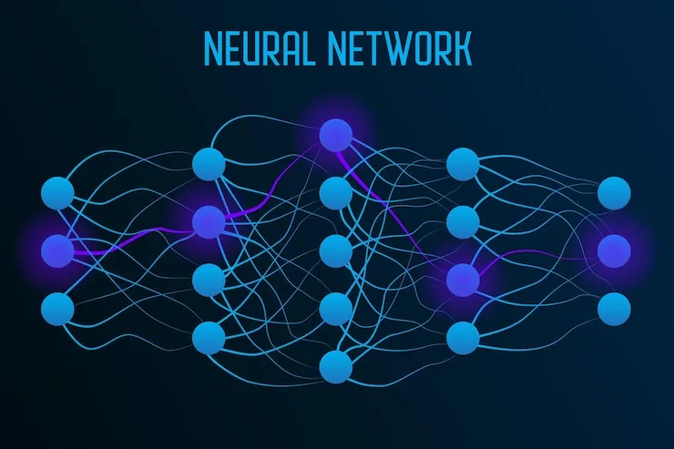
Uma linha do tempo
| Ano | Marco | Nomes |
|---|---|---|
| 1943 | Neurônio lógico (perceptron) | McCulloch e Pitts |
| 1956 | Conferência de Dartmouth | — |
| 1958 | Mark I Perceptron | Rosenblatt |
| 1965 | Redes multicamadas | Alexey Ivakhnenko |
| 1969 | Limitações do perceptron | Minsky e Papert |
| 1986 | Retropropagação | LeCun, Rumelhart, Hinton, Williams |
| 2010+ | Deep Learning | — |
1943 Neurônio lógico
McCulloch (neurofisiologista) e Pitts (matemático) propõem o neurônio artificial:
- Recebe várias entradas
- Produz uma única saída
- Neurônios lógicos: apenas 0 ou 1
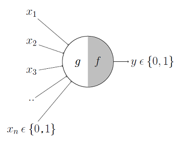
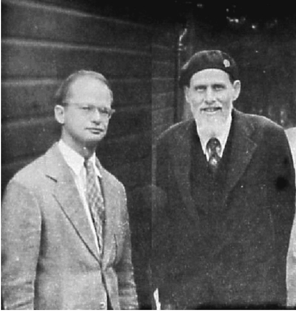
1958 Rosenblatt: Mark I Perceptron
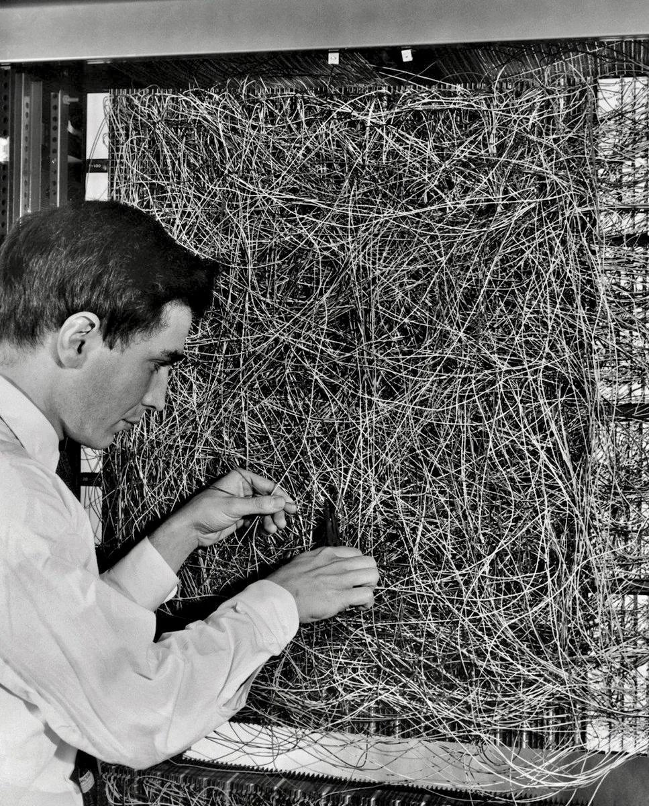
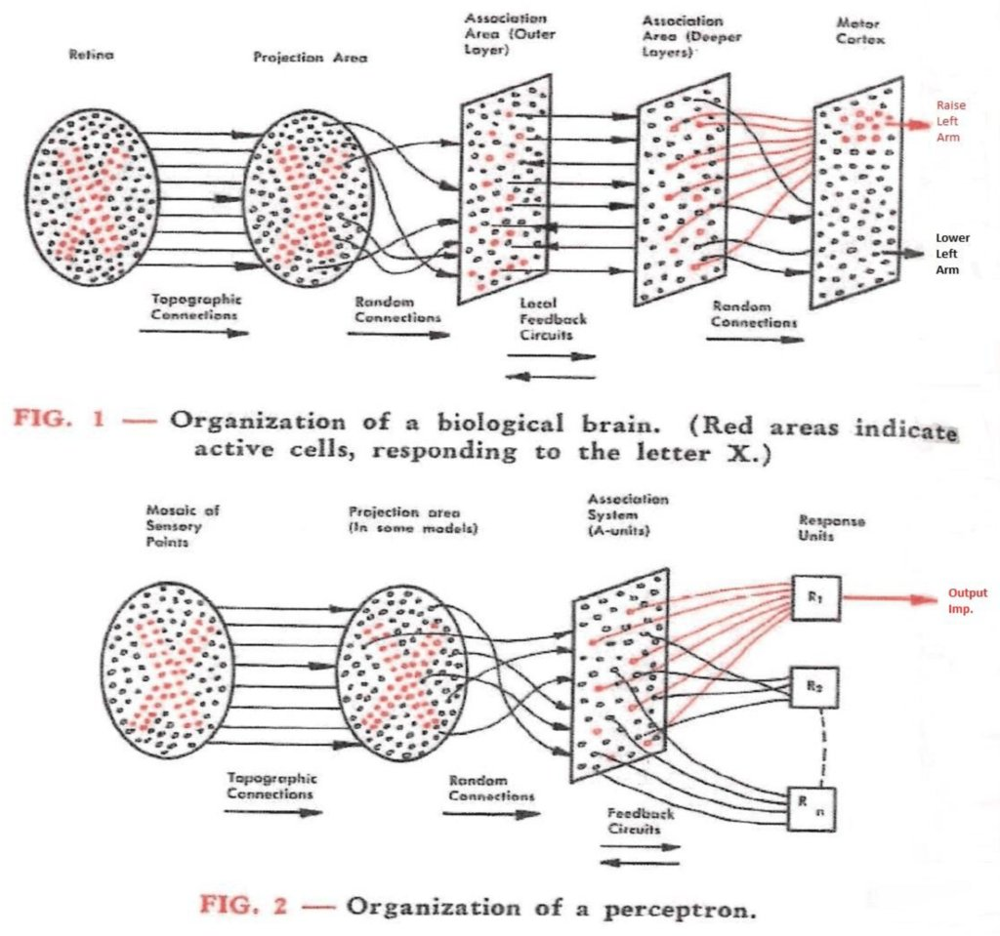
1969 Limitações? Minsky e Papert
- O perceptron só diferencia classes lineares
- Para resolver problemas não lineares precisaria de pelo menos mais uma camada!
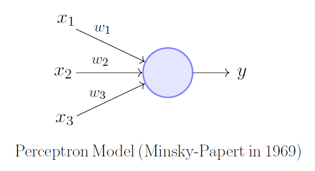
O problema do XOR
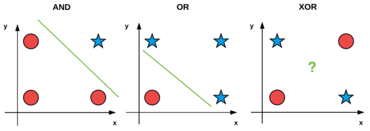
Uma única reta separa AND e OR, mas não o XOR — daí a necessidade de mais camadas.
Um neurônio linear resolve AND e OR
AND (pesos 0,4 e 0,4; limiar 0,5)
- \(1,0\): \(1\!\cdot\!0{,}4 + 0\!\cdot\!0{,}4 = 0{,}4 \to 0\)
- \(1,1\): \(1\!\cdot\!0{,}4 + 1\!\cdot\!0{,}4 = 0{,}8 \to 1\)
OR (pesos 1 e -1... falha no XOR)
- \(1,0\): \(1\!\cdot\!1 + 0\!\cdot\!(-1) = 1 \to 1\)
- \(1,1\): \(1\!\cdot\!1 + 1\!\cdot\!(-1) = 0 \to 0\)
Nenhum conjunto único de pesos reproduz o XOR com uma só camada.
1965 Redes multicamadas
- Alexey Ivakhnenko propõe empilhar várias camadas de neurônios
- Com camadas ocultas, a rede pode aprender fronteiras não lineares — inclusive o XOR
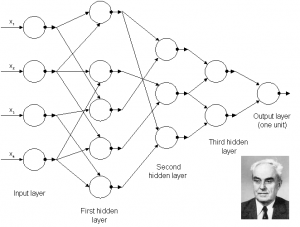
1986 Retropropagação
Propagação dos erros para trás (multiplicando pelos pesos) — o algoritmo que finalmente permitiu treinar redes profundas.
Etapa 3: Entendendo as redes neurais modernas
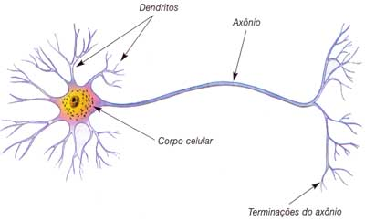
O neurônio (perceptron)
Modelo do neurônio biológico, com 4 componentes:
- Entrada \(x\): conjunto de valores
- Pesos \(w\): cada \(x\) é multiplicado por seu \(w\)
- Função de ativação \(\varphi\): sigmoide, tanh, ReLU...
- Saída: resultado final ou entrada de outros neurônios
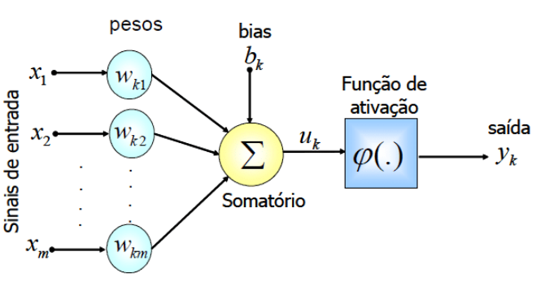
Um neurônio = regressão logística!
A regressão logística nada mais é do que um único neurônio cuja função de ativação é a sigmoide.
entrada \(x\) \(\;\to\;\) \(\sum w_i x_i\) \(\;\to\;\) sigmoide \(\;\to\;\) saída \(\hat{y}\)
A grande diferença: mais camadas
Podemos criar mais de uma camada de neurônios — é isso que dá à rede o poder de aprender funções complexas.
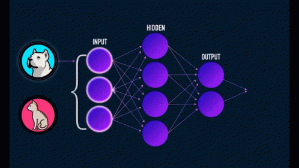
Etapa 4: Como a rede é treinada?
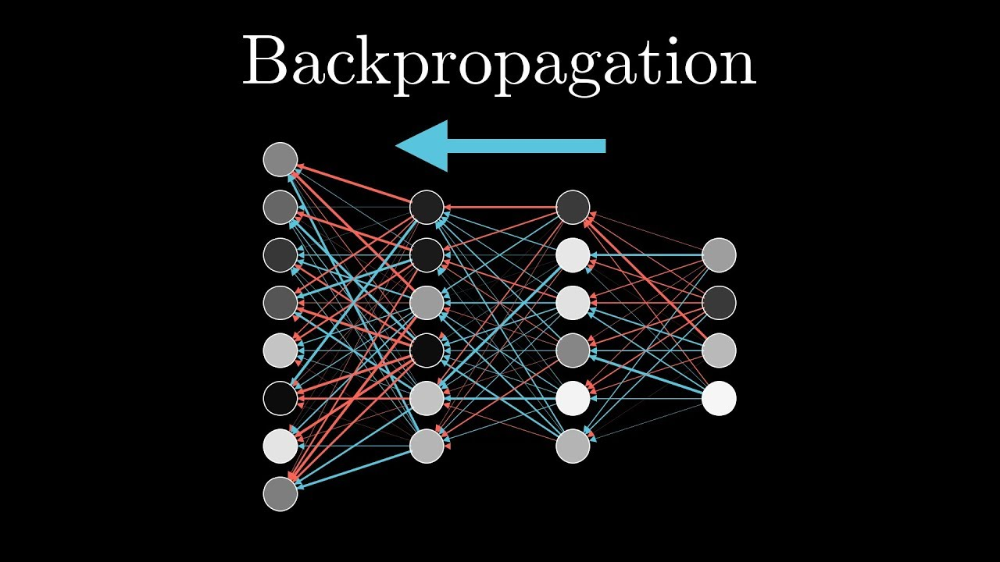
O neurônio final: onde está o erro
- Na regressão logística, o gradiente do peso é \( \text{erro} \times \text{entrada} \)
- O erro é a diferença \( \hat{y} - y \) (estimado − real)
- Atualizamos: \( w = w_{\text{velho}} - \alpha \cdot \text{grad} \)
\( w_1' = w_1 + \alpha \, x_1 (\hat{y} - y) \)
(erro médio do exemplo: \(0{,}1275\))
Mas e a camada de trás?
O neurônio final é fácil — ali temos o erro direto.
Para as camadas escondidas, precisamos propagar o erro para trás.
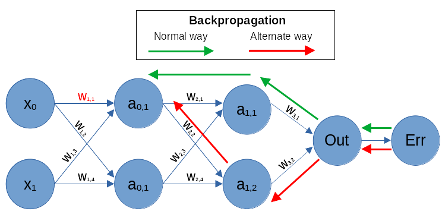
Retropropagação do erro
O erro propagado para trás tem que ser corrigido pelo valor do gradiente da função de ativação:
\( \delta_{\text{anterior}} = \big(\sum w \cdot \delta\big) \cdot g'(z) \)
Para a sigmoide: \( g'(z) = z \cdot (1 - z) \).
Exemplo: calculando a saída (y esperado = 1)
Camada oculta:
- \( 0{,}7\!\cdot\!0{,}2 + 0{,}2\!\cdot\!0{,}1 = 0{,}16 \) → sigmoide → \(0{,}54\)
- \( 0{,}7\!\cdot\!0{,}1 + 0{,}2\!\cdot\!0{,}1 = 0{,}09 \) → sigmoide → \(0{,}52\)
Saída:
\( \dfrac{1}{1+e^{-0{,}16}} = 0{,}54 \)
Erro na saída:
\( \text{erro} = \hat{y} - y = 0{,}54 - 1 = -0{,}46 \)
Propagando o erro para a camada oculta
Multiplicamos o erro pelos pesos e pelo gradiente da sigmoide \( z(1-z) \):
- \( -0{,}46 \cdot 0{,}2 = -0{,}092 \), \(\times\, 0{,}54(1-0{,}54) = \mathbf{-0{,}02385} \)
- \( -0{,}46 \cdot 0{,}1 = -0{,}046 \), \(\times\, 0{,}54(1-0{,}54) = \mathbf{-0{,}01341} \)
Estes são os deltas (\(\delta\)) de cada neurônio oculto.
Atualizando os pesos (taxa \(\alpha = 1\))
Gradientes da última camada (\(\delta \times\) ativação):
- \( -0{,}46 \cdot 0{,}54 = -0{,}2484 \)
- \( -0{,}46 \cdot 0{,}52 = -0{,}2392 \)
Novos pesos:
- \( w = 0{,}2 - 1\cdot(-0{,}2484) = \mathbf{0{,}4484} \)
- \( w = 0{,}1 - 1\cdot(-0{,}2392) = \mathbf{0{,}3392} \)
Gradientes da camada 1
Cada delta multiplica a entrada correspondente:
| Cálculo | Gradiente | Novo peso |
|---|---|---|
| \(-0{,}02385 \cdot 0{,}7\) | \(-0{,}01670\) | \(0{,}2 - (-0{,}01670) = 0{,}2167\) |
| \(-0{,}02385 \cdot 0{,}2\) | \(-0{,}00477\) | \(0{,}1 - (-0{,}00477) = 0{,}10477\) |
| \(-0{,}01341 \cdot 0{,}2\) | \(-0{,}002682\) | \(0{,}2 - (-0{,}002682) = 0{,}20268\) |
| \(-0{,}01341 \cdot 0{,}1\) | \(-0{,}001341\) | \(0{,}1 - (-0{,}001341) = 0{,}10134\) |
Calculando novamente
Com os pesos atualizados, refazemos o forward pass:
- Ativações ocultas: \(0{,}547909\) e \(0{,}523384\)
- Saída: \(0{,}60425\)
Erro anterior: \(-0{,}46\)
Novo erro: \( 0{,}60425 - 1 = \mathbf{-0{,}39575} \)
O erro diminuiu! ✅
Etapa 5: Facilitando os cálculos com ReLU
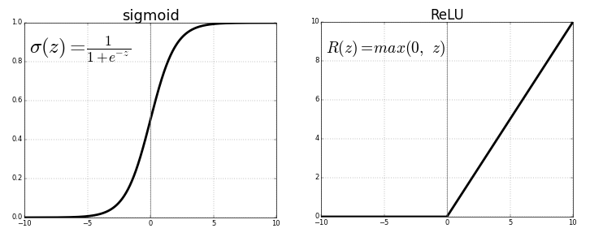
ReLU: evita a exponencial
Função:
\( R(z) = \max(0, z) \)
- \( z \le 0 \Rightarrow 0 \)
- \( z > 0 \Rightarrow z \)
Derivada (bem mais fácil):
- \( z \le 0 \Rightarrow 0 \)
- \( z > 0 \Rightarrow 1 \)
Retropropagação com ReLU
Como a derivada é \(1\) (quando ativa), o erro volta "cheio", sem encolher:
- \( -0{,}46 \cdot 0{,}2 = -0{,}092 \), \(\times\, 1 = \mathbf{-0{,}092} \)
- \( -0{,}46 \cdot 0{,}1 = -0{,}046 \), \(\times\, 1 = \mathbf{-0{,}046} \)
Compare com a sigmoide, onde multiplicávamos por \(z(1-z) \approx 0{,}25\), encolhendo o erro.
Melhorias da ReLU
- Evita o cálculo exponencial, que é pesado para o computador
- Desaparecimento do gradiente: na sigmoide a derivada \(z(1-z)\) faz o erro sumir ao atravessar muitas camadas
- Com a ReLU isso não acontece: o gradiente volta "cheio" (\(1\)) sempre que a ativação for \(> 0\)
Problema: a "morte do neurônio" 💀
- Se a ativação for \(< 0\), o gradiente propagado é \(0\) — o neurônio para de aprender
- Solução — Leaky ReLU: valores negativos passam a ser aceitos
- A derivada para \(z \le 0\) deixa de ser \(0\) e passa a ser \(\alpha\) (fator de vazamento)
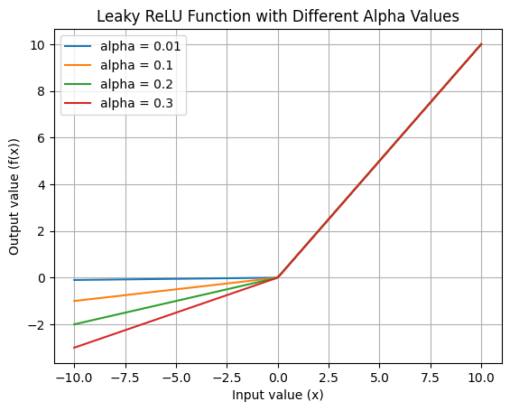
Etapa 6: Prática 🧪
Vamos treinar uma rede neural para prever doença cardíaca a partir de dados de pacientes.
Mãos à obra
Notebook (Google Colab):
colab.research.google.com/drive/1Vxu6gAre102fyz0kAMM3j4SgkMZiGAfV
Dataset (Kaggle):
Resumo da aula
Próxima aula: Arquiteturas de Redes Neurais